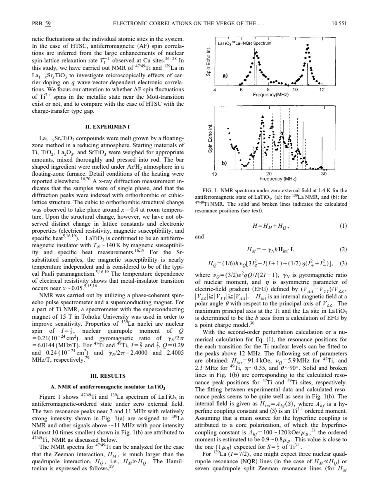
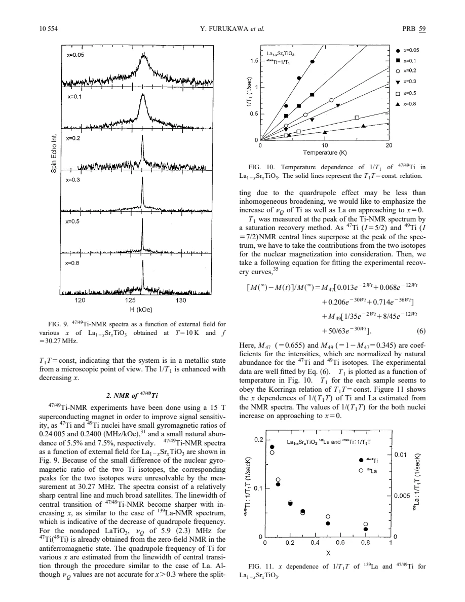
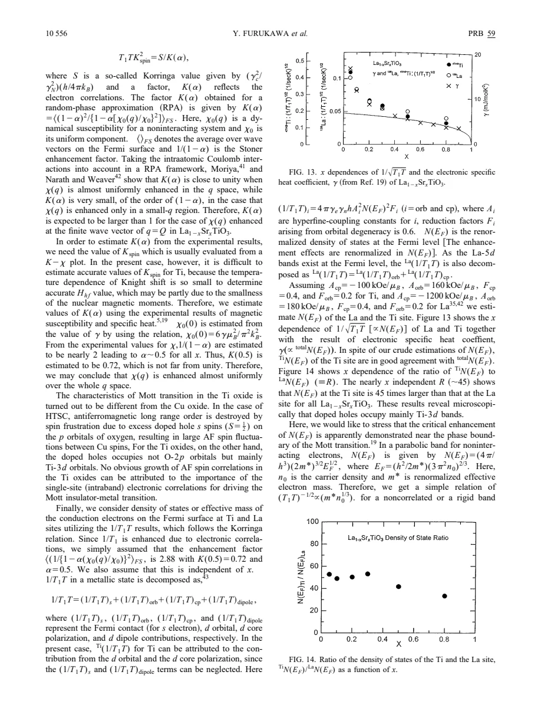

experiment · Furukawa · supplied source 1999
Electronic correlations on the verge of the Mott transition in La1−xSrxTiO3 by 47/49Ti and 139La nuclear magnetic resonance
Ti and La relaxation both remain Korringa-like while growing toward the metallic Mott edge, favoring broadly renormalized metallic dynamics over a prominent additional AF fluctuation peak in this study.
The question: What microscopic correlations grow as Sr-doped LaTiO3 approaches its Mott boundary?
Before you start: the few terms you need
- Korringa behavior: 1/T1 proportional to T in a metallic low-energy regime
- Hyperfine form factor: a nucleus weights spin fluctuations differently at different q
- Knight shift: static uniform spin response plus other shift contributions
- Electric field gradient: local anisotropic electric environment producing quadrupole splitting
See → explain → test
Understand it in four pictures.
Picture 1 / 4
Do not compare raw rates blindly
Look for: Ti sits on the magnetic ion; La lies at a site where transferred AF fields cancel geometrically.
Swipe across the picture to read every label, or enlarge it below.
- Ti nucleus
- La nucleus
Teaching probe comparison. This is not an exact numerical form-factor calculation.
The two nuclei provide different momentum filters, allowing a more informative comparison than one relaxation curve.
Picture 2 / 4
Separate line shape from dynamics
Look for: A shrinking central-line width with Sr content reflects quadrupole effects; its inverse-frequency scaling helps identify the origin.
Swipe across the picture to read every label, or enlarge it below.
- Measure central line
- Vary resonance frequency
- Test quadrupole scaling
- Infer EFG change
Teaching diagnostic sequence; second-order quadrupole width scales as νQ²/ν0 under the source assumptions.
A broad NMR line is not automatically evidence for slow magnetism.
Picture 3 / 4
Test temperature and composition separately
Look for: For a fixed metallic composition, 1/T1 is linear in T; its slope grows as Sr fraction decreases toward the boundary.
Swipe across the picture to read every label, or enlarge it below.
- Temperature dependence
- Composition dependence
Teaching distinction; no measured relaxation points are reproduced.
Korringa-like temperature dependence can coexist with increasingly strong correlations.
Picture 4 / 4
Compare both filters with heat capacity
Look for: Ti and La slopes evolve similarly, and square-root rate estimates track the enhanced low-energy density of states.
Swipe across the picture to read every label, or enlarge it below.
- Ti and La rise together
- γ rises similarly
- Renormalized metallic DOS
Model-dependent inference; it does not prove that all finite-q correlations vanish.
The source favors mass/DOS renormalization over a prominent extra AF-q peak on the metallic side.
Predict before revealing
Ti and La both have nearly constant T1T, and both rate coefficients grow similarly toward small Sr x. What interpretation is favored?
Choose an answer, then compare the reasoning.
The nucleus comparison constrains a selective AF enhancement; constant T1T does not imply an uncorrelated metal.
Read the answer
Broad metallic DOS/mass renormalization without a prominent additional AF peak The nucleus comparison constrains a selective AF enhancement; constant T1T does not imply an uncorrelated metal.
Go deeper Follow the full argument
Choose the right endpoint and x convention
This paper writes La1−xSrxTiO3, with x the Sr fraction. Undoped LaTiO3 is a d1 antiferromagnetic Mott-Hubbard insulator; adding Sr removes electrons relative to that parent and makes metallic compositions near x around 0.05 and above. Approaching the Mott edge from the metal therefore means decreasing x. The earlier Tokura paper, source 341, writes Sr1−xLaxTiO3 and uses x as the La fraction, so its horizontal axis runs in the opposite direction. The NMR work aims to test the microscopic origin of the bulk mass enhancement inferred from heat capacity and other probes. In particular, it asks whether a rapidly growing antiferromagnetic fluctuation component near an ordering wavevector is needed, as often discussed for metallic cuprates.
The insulating parent calibrates a geometric cancellation
Zero-field Ti NMR in LaTiO3 requires a large internal hyperfine field, reported as 91.4 kOe, together with quadrupole interactions. La spectra can be explained with an almost vanishing internal magnetic field. In the proposed magnetic structure, contributions from surrounding antiferromagnetically ordered Ti moments cancel at the La site. La's lack of a large field does not mean its neighboring Ti ions lack ordered moments. This geometric argument motivates treating La as a relatively weak probe of the AF wavevector, while Ti can sample a broader momentum range. It is a useful calibration of the probe comparison, though the paper's inference assumes the symmetry-based filtering remains relevant for the metallic samples and acknowledges uncertainty in very small spin canting.
Read quadrupole broadening before assigning magnetism
The field-swept powder spectra have central lines and broader satellites because both La and Ti nuclei have spin greater than one-half. The central-line singularities receive second-order quadrupole shifts. In Sr-substituted samples their separation scales approximately inversely with resonance frequency, supporting a quadrupolar origin rather than simple magnetic broadening. The inferred quadrupole frequency decreases with increasing Sr content, but its accuracy deteriorates when inhomogeneous width becomes comparable with the splitting. Point-charge calculations alone do not explain the full composition variation, motivating an electronic-density contribution to the electric field gradient. The La Knight shift is nearly temperature independent and becomes more negative toward small x. Its sign comes from the hyperfine contribution, so a negative shift must not be mistaken for a negative spin susceptibility.
What the relaxation comparison establishes
At fixed metallic compositions, both La and Ti obey approximately T1T = constant. Yet their 1/(T1T) values increase toward the low-Sr metallic boundary. If a strongly growing AF-q component affected Ti but were filtered out at La, one would expect a more pronounced difference between their evolution. Instead the source finds similar composition dependence and no strong extra temperature-driven AF enhancement. This favors broadly enhanced metallic response rather than a dominant new AF peak within the investigated range. Such reasoning is more precise than saying a large relaxation rate always means antiferromagnetism. Relaxation is a weighted momentum sum, whereas a static shift measures a uniform response. The conclusion is conditional on hyperfine couplings, the accessible temperature range and the sample compositions; it is not proof of zero AF correlations everywhere.
Mass estimates need explicit assumptions
The discussion relates relaxation to orbital and core-polarization contributions and estimates local low-energy densities of states using assumed hyperfine and correlation factors. Ti dominates that estimate, with the local Ti DOS around forty-five times the La DOS. The ratio is approximate rather than a direct count of orbital electrons. The square root of 1/(T1T), not the raw relaxation slope, is compared with the DOS and electronic heat-capacity coefficient. For a simple spherical band that square root scales as effective mass times carrier density to the one-third power. Hall results supply the carrier-density behavior, allowing departures to be interpreted as mass enhancement. The study therefore supports the earlier bulk picture microscopically, while distinguishing its metallic titanate response from the enhanced AF fluctuations of cuprates. Source 338 is a byte-different supplied copy of this same work, with identical text and rendered pages; it is not a second experiment.
Translate the mathematics Key equations and symbol meanings
1/(T1T) ∝ Σq |A(q)|² χ″(q,ωN)/ωN
Symbols: A(q): hyperfine amplitude form factor; χ″: imaginary dynamical spin susceptibility; ωN: nuclear Larmor frequency. Prefactors and the paper's coupling-weight notation are suppressed.
Different nuclei weight the same host dynamics differently. Comparing Ti with filtered La constrains whether a prominent AF component is needed.
T1T ≈ constant at fixed metallic x
Symbols: T1: nuclear spin-lattice relaxation time; T: temperature; x: Sr fraction in this source.
Equivalent to 1/T1 proportional to T. The constant may change strongly with composition, so this law is compatible with mass enhancement.
[1/(T1T)]^(1/2) ∝ N(EF) ∝ m* n0^(1/3)
Symbols: N(EF): renormalized DOS; m*: effective quasiparticle mass; n0: carrier density, in the simple parabolic-band interpretation.
Use the square root of the rate coefficient and account for carrier density before inferring mass; coupling and correlation factors are assumed.
ΔHquadrupole ∝ νQ²/ν0
Symbols: ΔHquadrupole: central-line singularity separation, with field/frequency conversion understood; νQ: quadrupole frequency; ν0: resonance frequency.
Inverse-frequency scaling tests the second-order quadrupole interpretation under the stated asymmetry assumptions.
Read the evidence A guided look at the original figures

Open the full original page ↗

Open the full original page ↗

Open the full original page ↗
What this paper does—and does not—establish
- Historical 1999 study; x is Sr fraction, opposite to source 341's La-fraction convention.
- Momentum filtering and mass/DOS estimates depend on assumed hyperfine, band and correlation factors.
- No prominent extra AF enhancement in the measured metal is weaker than a statement that all AF correlations vanish.
- Source 338 is the same work in an additional supplied PDF encoding, not an independent replication.
Explain it back.
Try answering aloud before opening the explanation.
Why is La an AF filter in the argument?
Transferred fields from symmetrically arranged AF Ti neighbors cancel; the parent spectrum supports that geometry.
Which power of the rate coefficient tracks the DOS in the simple model?
The square root, [1/(T1T)]^(1/2).
Does source 338 provide independent confirmation?
No. Its nine text pages and rendered pages match this same article, despite different PDF bytes.
Connect the next paper.
Source version, reading coverage and preservation
All extracted body text read; all nine pages rendered for version comparison, with model/equations and figures on pages 5–8 visually checked; references 8–9 structurally reviewed.
Reviewed body pages: 1, 2, 3, 4, 5, 6, 7, 8. Cited works not independently re-read.
Original file retained byte for byte. SHA-256: 077fd3fd23d7c15cc37c06accc4cf3f5e1ef3d775d4ae45e047704bae0cb9425
Filename: PRB - Furukawa - NMR correlations near the Mott transition in LaSrTiO3 - 1999.pdf.